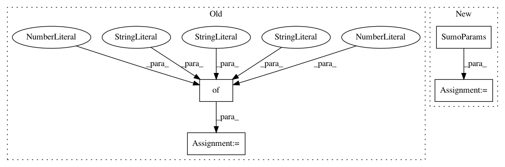

cf0db8df8bc178f0b35766b7f3c7fca9772a23f7,cistar_dev/examples/mixed-rl-single-lane.py,,run_task,#,36
Before Change
auton_cars = 4
human_cars = tot_cars - auton_cars
sumo_params = {"time_step": 0.1, "human_sm": 1, "rl_sm": 1}
sumo_binary = "sumo"
type_params = [("rl", auton_cars, (RLController, {}), (StaticLaneChanger, {}), 0),
After Change
auton_cars = 4
human_cars = tot_cars - auton_cars
sumo_params = SumoParams()
sumo_binary = "sumo-gui"
type_params = [("rl", auton_cars, (RLController, {}), (StaticLaneChanger, {}), 0),
In pattern: SUPERPATTERN
Frequency: 3
Non-data size: 4
Instances
Project Name: flow-project/flow
Commit Name: cf0db8df8bc178f0b35766b7f3c7fca9772a23f7
Time: 2017-09-07
Author: kanaadp@gmail.com
File Name: cistar_dev/examples/mixed-rl-single-lane.py
Class Name:
Method Name: run_task
Project Name: flow-project/flow
Commit Name: 28b657fc3e287873473a43da01b4db4b64d1ad03
Time: 2017-10-12
Author: kanaadp@users.noreply.github.com
File Name: examples/two_loops_two_mergin_test.py
Class Name:
Method Name:
Project Name: flow-project/flow
Commit Name: cf0db8df8bc178f0b35766b7f3c7fca9772a23f7
Time: 2017-09-07
Author: kanaadp@gmail.com
File Name: cistar_dev/examples/figure8_test.py
Class Name:
Method Name: